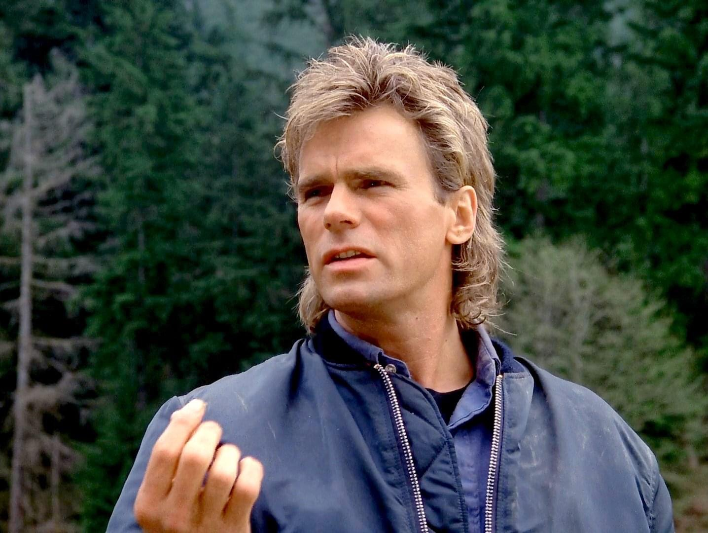
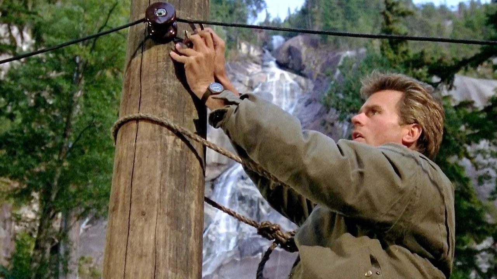

J'avais neuf ans.
MacGyver me faisait rêver. Cet homme qui se sortait toujours des pires situations sans jamais tirer un coup de feu — juste avec ce qu'il avait sous la main, un peu de scotch, un trombone, une intelligence qui transformait n'importe quel objet du quotidien en solution.
Mais ce n'était pas seulement le bricolage qui me marquait. C'était ce pour quoi il le faisait. Toujours au service des autres. Sauver la veuve et l'orphelin, lutter contre l'injustice, faire le bien autour de lui sans jamais chercher la gloire.
Pour mes dix ans, mes parents m'ont offert le même couteau suisse que le sien.
Je l'ai toujours. En parfait état de marche.
Ce soir, on ressort le couteau.
MacGyver, en pleine mission
MacGyver.
1985. Créée par Lee David Zlotoff pour ABC. Sept saisons, jusqu'en 1992.
Angus MacGyver, agent secret travaillant pour la fondation Phoenix, résout chaque mission sans jamais recourir à une arme à feu. Sa méthode : la science, l'improvisation, et une capacité quasi magique à transformer n'importe quel objet du quotidien en outil de survie.
Richard Dean Anderson incarne le personnage pendant toute la durée de la série — un héros atypique pour l'époque, plus proche du scientifique débrouillard que du soldat musclé qui dominait alors le petit écran américain.
Autour de lui, Pete Thornton, son supérieur et ami à la fondation Phoenix, apparaît régulièrement pour l'envoyer en mission ou l'aider dans ses enquêtes.
MacGyver n'est pas une série d'action au sens explosif du terme.
C'est une série sur l'intelligence pratique, où chaque épisode culmine dans une improvisation technique devenue culte — au point que le nom du personnage est entré dans le langage courant pour désigner une solution ingénieuse bricolée avec les moyens du bord.
1985.
La télévision américaine des années 80 est saturée de héros musclés — Rambo, les productions Cannon Films, une vague de virilité armée qui domine le petit comme le grand écran. Lee David Zlotoff veut proposer l'inverse complet.
Son idée : un héros qui refuse catégoriquement de porter une arme à feu, et qui résout ses problèmes par l'intelligence plutôt que par la force. Un pari risqué pour ABC, dans un paysage télévisuel qui privilégie l'action spectaculaire.
Le choix de Richard Dean Anderson s'avère décisif. Acteur encore peu connu, il apporte à MacGyver un charme décontracté, une aisance naturelle qui rend crédible ce personnage censé résoudre des situations impossibles avec une pince coupante et du ruban adhésif.
La série s'entoure de véritables consultants scientifiques pour authentifier les improvisations de MacGyver — la plupart des solutions bricolées à l'écran reposent sur des principes de physique et de chimie réellement applicables, ce qui deviendra une marque de fabrique revendiquée par la production.
Diffusée le lundi soir sur ABC, la série trouve rapidement son public — familial, fidèle, conquis par cette proposition différente du héros d'action traditionnel.
MacGyver ne ressemble à rien d'autre dans le paysage télévisuel américain du milieu des années 80.

Richard Dean Anderson — MacGyver
Angus MacGyver travaille pour la fondation Phoenix, une organisation qui l'envoie résoudre des situations que personne d'autre ne peut gérer.
Chaque épisode le place face à un problème différent — sauver des otages, désamorcer une menace, protéger des innocents pris dans un engrenage dont ils ne sont pas responsables. La méthode ne varie jamais : jamais d'arme à feu, toujours l'intelligence et l'improvisation.
Ce qui distingue MacGyver de tout ce qui l'entoure à la télévision de l'époque, c'est la nature de ses solutions. Coincé dans une pièce fermée, entouré d'objets a priori inutiles, il transforme systématiquement son environnement immédiat en boîte à outils improvisée. Un trombone devient un crochet. Du bicarbonate et du vinaigre deviennent une réaction chimique salvatrice. Rien n'est jamais vraiment un obstacle définitif.
Et derrière chaque mission, une même conviction tranquille — protéger les plus vulnérables, réparer une injustice, agir sans jamais chercher la reconnaissance.
MacGyver ne se bat pas contre des ennemis au sens classique du terme.
Il se bat contre des situations, avec les moyens du bord, et une confiance inébranlable dans sa propre ingéniosité.
MacGyver a réussi quelque chose de rare pour une série télévisée des années 80 — imposer un nouveau modèle de héros dans un paysage entièrement dominé par la force physique.
À une époque où l'action télévisée et cinématographique se résume trop souvent à des muscles et des armes, MacGyver propose l'inverse total. La véritable force du personnage réside dans sa tête, pas dans ses poings. Cette proposition aurait pu sembler faible dramaturgiquement — un héros sans arme, sans confrontation physique directe. Elle devient au contraire le moteur principal de la tension de chaque épisode.
Richard Dean Anderson porte cette idée avec une justesse remarquable. Il ne joue jamais MacGyver comme un surhomme infaillible. Il y a toujours une tension réelle dans ses improvisations — l'incertitude que la solution fonctionne vraiment, le temps qui presse, l'objet du quotidien qui doit soudain devenir vital. Cette fragilité apparente rend chaque réussite plus satisfaisante encore.
La série construit aussi une éthique cohérente et jamais démentie. MacGyver refuse la violence non par faiblesse, mais par conviction. Ce refus devient une force narrative en soi — il oblige constamment le personnage à trouver des solutions plus créatives que la confrontation directe.
Et il y a cette dimension presque pédagogique, jamais lourde, qui infuse chaque épisode. La série donne envie de comprendre comment les choses fonctionnent, de regarder le monde matériel qui nous entoure comme un ensemble de possibilités plutôt que de contraintes fixes.
MacGyver a durablement marqué la culture populaire au point que son nom est devenu un verbe.
Peu de séries peuvent revendiquer un tel héritage linguistique.

MacGyver — improvisation en cours
MacGyver n'a jamais vraiment disparu de la mémoire collective — mais sa présence s'est progressivement réduite à une poignée de clichés déconnectés de ce qui faisait sa vraie force.
Le nom du personnage est devenu si populaire qu'il s'est détaché de la série elle-même. "Macgyveriser" quelque chose est entré dans le langage courant, au point que beaucoup connaissent l'expression sans avoir jamais vu un seul épisode. Le couteau suisse, le trombone, le ruban adhésif — ces symboles ont survécu, mais souvent vidés de leur contexte narratif et de l'éthique qui les portait.
Le revival de 2016, tentative de relancer la franchise avec un nouveau casting, n'a pas aidé à raviver l'intérêt pour l'originale. Reçu tièdement par la critique et le public, il a plutôt contribué à brouiller les générations — pour beaucoup de jeunes spectateurs, MacGyver devient cette version récente, sans lien réel avec la série de 1985.
Et la structure même de la série — un format procédural, un épisode, un problème résolu, sans grande arche narrative sur la durée — correspond de moins en moins aux habitudes de consommation actuelles, plus tournées vers les séries feuilletonnantes à grande continuité.
MacGyver reste un nom que tout le monde connaît.
Mais la série elle-même, dans sa substance réelle, s'est progressivement effacée derrière sa propre légende.
Parce qu'avant d'être un mème ou une expression toute faite, MacGyver était une proposition radicale — un héros dont la seule arme était l'intelligence pratique, à une époque où ça n'allait absolument pas de soi.
La série mérite d'être revue au-delà du folklore qu'elle a engendré. Chaque épisode reste construit avec un vrai sens du rythme, une tension qui repose entièrement sur la résolution de problèmes plutôt que sur la violence, et une conscience scientifique qui donnait envie de comprendre comment le monde fonctionnait.
Richard Dean Anderson mérite aussi d'être redécouvert pour ce rôle précis — sa capacité à rendre crédible un personnage qui aurait facilement pu sombrer dans le ridicule, avec un charme et une décontraction qui ont porté la série pendant sept saisons.
Et il y a cette éthique de fond, jamais démodée — l'idée qu'on peut affronter n'importe quelle situation par l'intelligence plutôt que par la force, qu'on peut aider les autres sans rien attendre en retour.
J'ai reçu le même couteau suisse que le sien pour mes dix ans.
Je l'ai encore aujourd'hui, en parfait état.
Certains cadeaux d'enfance ne prennent jamais une ride.
Il y a ce geste, répété dans presque chaque épisode — MacGyver qui regarde autour de lui, qui prend le temps d'observer ce qui l'entoure avant d'agir. Jamais de panique visible. Juste cette certitude tranquille qu'une solution existe forcément quelque part dans la pièce.
Un trombone. Du ruban adhésif. Un couteau suisse.
Le mien est toujours dans un tiroir, celui que mes parents m'ont offert pour mes dix ans. Il fonctionne encore parfaitement.
Certains objets traversent les décennies sans jamais perdre leur utilité.
Cette série non plus.
La cassette est dans le lecteur. On rembobine.
Titre original
MacGyver
Pays
États-Unis
Genre
Action / Aventure
Diffusion
ABC, 1985–1992 (7 saisons)
Créateur
Lee David Zlotoff
Avec aussi
Dana Elcar
Héritage
"Macgyveriser" — entré dans le langage courant
Fil conducteur
Séries TV cultes — EP. 02
SOMEDAY — SÉRIES EP. 02